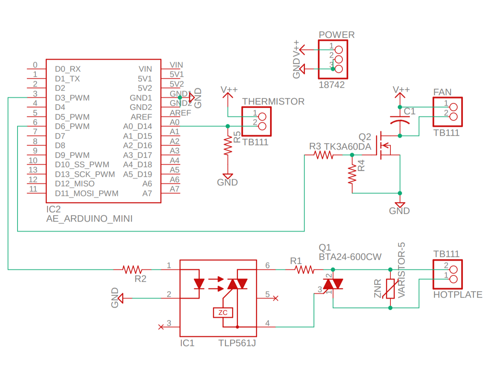

5000 円で作るリフロー装置
2022-08-23
設計

- サーミスタで温度を計測しフィードバック制御する

- 温度プロファイルの設定 UI は、React で実装する
- Web Serial API を使ってブラウザと Arduino でシリアル通信する
- リアルタイムで温度のグラフを表示する
回路

| 値段 | 備考 | ||
|---|---|---|---|
| HOT | ホットプレート | 1518 | 750W |
| IC1 | フォトトライアック | 70 | |
| IC2 | 秋月 Arduino | 950 | |
| Q1 | トライアック | 160 | |
| Q2 | MOSFET | 50 | Nch |
| R1 | 100Ω | 1 | |
| R2 | 330Ω | 1 | |
| R3 | 100Ω | 1 | ゲート抵抗 |
| R4 | 10kΩ | 1 | ゲートソース抵抗 |
| R5 | 47Ω | 1 | サーミスタ分圧 |
| C1 | 0.1μF セラコン | 12 | モーターノイズ用 |
| ZNR | バリスタ | 25 | |
| ターミナル | 60 | 3 個 | |
| FAN | DC ファン | 280 | DC 5V 0.3A |
| NTC | NT サーミスタ | 50 | |
| POW | 5V 電源 | 580 | 5V 2A |
| POW | DC ジャック | 30 | |
| ヒートシンク（トライアック用） | 110 | ||
| ヒートシンク（FET 用） | 35 | 不要かも | |
| 絶縁放熱シート | 40 | 2 枚 | |
| M3 プラネジ | 4 | 2 本 | |
| 合計 | 3979 |
制御
温度制御
- トライアックがゼロクロス
- → 最大でも 50/60Hz の制御
- とりあえず PI 制御でいいかな
- 分岐予測器みたいなオートマトンを使った ON/OFF 制御でもよさそう
- 離散化した PI 制御と等価になりそう
温度計測
- サーミスタの特性
\[ R(T) = R_0 \exp \l[ B \l( \f{1}{T} - \f{1}{T_0} \r) \r] \]
\[ V(T) = V_0 \f{R_P}{R(T)+R_P} \]
- 基準温度：\(T_0=298 \rm{K} (25°C)\)
- 基準抵抗：\(R_0=10000 \Omega\)
- B 定数：\(B=4126 \rm{K}\)
- 分圧抵抗：\(R_P=47 \Omega\)
- 全電圧：\(V_0=5\rm{V}\)
温度逆算
\[ R(T) = R_P \l(\f{V_0}{V(T)}-1\r) \]
\[ \f{1}{T} = \f{1}{B} \ln\l(\f{R(T)}{R_0}\r) + \f{1}{T_0} \]
\[ T = \l\{\f{1}{B} \ln\l[\f{R_P}{R_0}\l(\f{V_0}{V(T)}-1\r)\r] + \f{1}{T_0}\r\}^{-1} \]
- ADC の値\(V_A\)から
\[ X = \f{47}{10000}\f{1024-V_{A}}{V_{A}} \]
- 対数を取る
\[ Y = \ln X \]
対数関数は \(X\sim 0.01\) のまわりで近似したものを使う
- 温度を得る
\[ \f{1}{T}=\f{Y}{B} + \f{1}{T_0} \]
温度プロファイル
- △ 2 ~ 3 °C/sec
- 150 ~ 175 °C / 60 ~ 120 sec
- △ 4 °C/sec
- 250 °C / 60 ~ 90 sec
- ファンで急冷
温度プロファイルのフォーマット
| 0 | 7~4 | ステップ番号(0~15) |
| 0 | 3~0 | 内容(0:SLOPE,1:CONST,2:FAN,3:END) |
| 1 | 7~0 | 温度(SLOPE,FAN なら到達目標温度、CONST なら維持する温度) |
| 2 | 7~0 | 時間(sec) |
例
| 0000-0000 | #0 SLOPE | 60 秒で 150°C まで上げる |
| 0d 150 | 150 °C | |
| 0d 60 | 60 sec | |
| 0001-0001 | #1 CONST | 90 秒間 150°C を維持 |
| 0d 150 | 150 °C | |
| 0d 90 | 90 sec | |
| 0010-0000 | #2 SLOPE | 60 秒で 250°C まで上げる |
| 0d 250 | 250 °C | |
| 0d 30 | 30 sec | |
| 0011-0001 | #3 CONST | 60 秒間 250°C を維持 |
| 0d 250 | 250 °C | |
| 0d 60 | 60 sec | |
| 0100-0010 | #4 FAN | 30 °C になるまでファンで冷却 |
| 0d 30 | 30 °C | |
| 0 | - sec | |
| 0101-0011 | #5 END | おわり |
| 0 | ||
| 0 |
UX
- GUI でプロファイル指定
- RUN ボタン押す
- 温度制御開始
- 温度モニタリング
通信方式
実行命令
- 温度プロファイルを送信することでリフローを開始する
- フォーマットは、